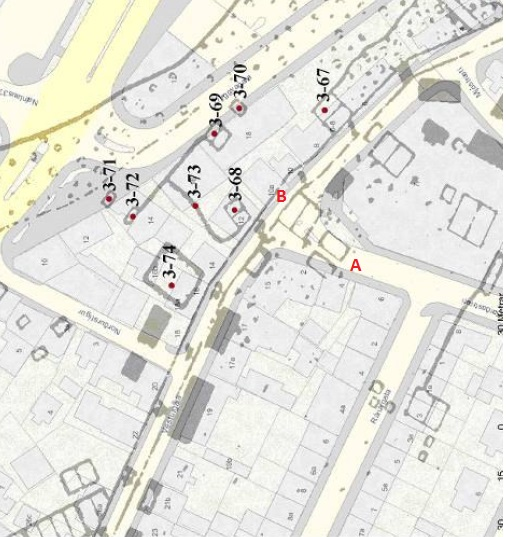
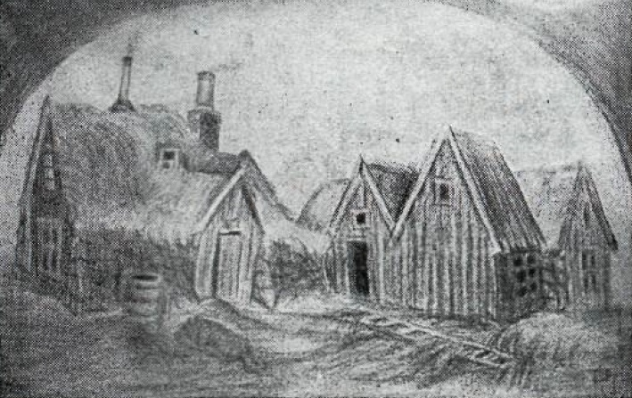
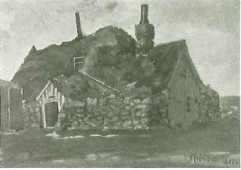
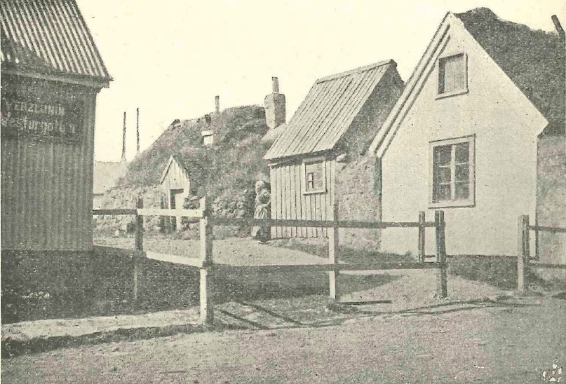

Kort og teikning

Myndin sýnir Gróubæ (merktur B) á korti Sveins Sveinssonar frá 1887 sem þarna er sett ofan á núverandi götukort. Torfbærinn merktur A er Dúkskot. Sjá má að Gróubær hefur tvær burstir sem vísa í austur-vestur. Bæði Gróubær og Dúkskot voru rifnir um 1920 þegar Garðastrætið var lengt til norðurs. Kort · 1887

Bærinn reis snemma á 19. öld og þá nefndur Hjalli. Síðar reis þar bær á sama stað sem nefndur var Gróubær eftir eiganda sínum Gróu Ingimundardóttur frá Brennu. Ekki eru til ljósmyndir af torfbænum en Gróubær er hægra megin á teikningunni en Dúkskot vinstra megin. Teikning
Dúkskot og Gróubær

Málverk af Gróubæ sem Magnús Jónsson prófessor málaði samkvæmt skýringum sem fylgdu þessari mynd. Það virðist þó nokkuð ljóst að þetta er torfbærinn Dúkskot sem stóð við hlið Gróubæjar. Málverk eftir Magnús Jónsson

Gróubær er litla timburhúsið hægra megin við torfbæinn Dúkskot, en torfbærinn Dúkskot var rifinn um 1920. Reyndar er sagt að torfbærinn Gróubær hafi verið rifinn á sama tíma sem stemmir ekki við þessa mynd þar sem Dúkskot er enn torfbær en timburhús risið í stað torfbæjarins Gróubæjar. Hægra megin við Gróubæ er steinhús við Vesturgötu 11. Dúkskot og Gróubær